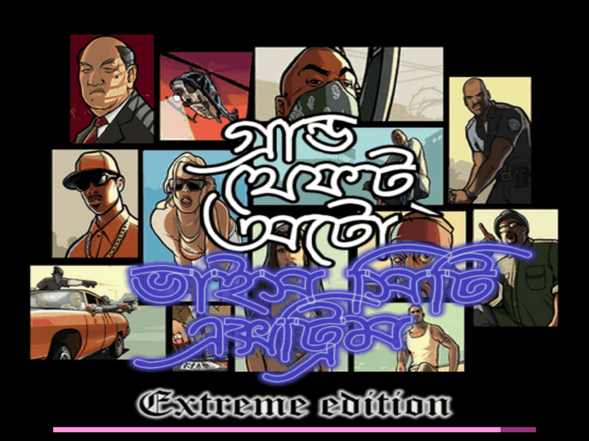
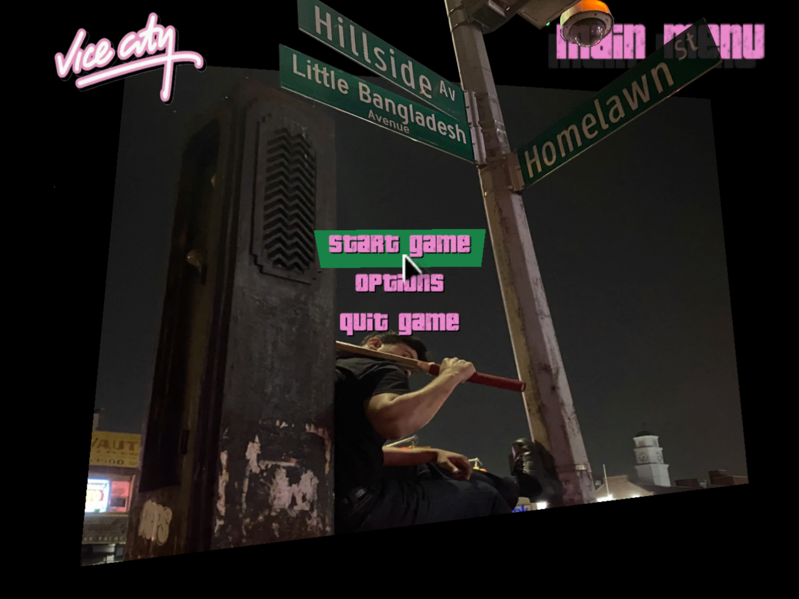

Bengali GTA

Shakib Al Hasan.
I wanted to be like Shakib Al Hasan.
The best batter. The best bowler. The best all-rounder.
Red tape a tennis ball – sixes scored, windows shattered. Run! We run with plastic sandals: we, the neighborhood mischiefs.
Up four floors I go, back to my apartment. Press the power button, hear the XP sound — a desktop shortcut to Vice City. I will play, and I will continue to play – until another power outrage. Keep the curtains open: kid across the opposite apartment watches me play through his window. I think he wants to play as well.
Stumps placed on both sides of the street. We played cricket in the middle of the road. Between the batter and the bowler, a rickshaw would pass, or a CNG. We waited, then we waited again.
Sometimes, I would race the rickshaws.
